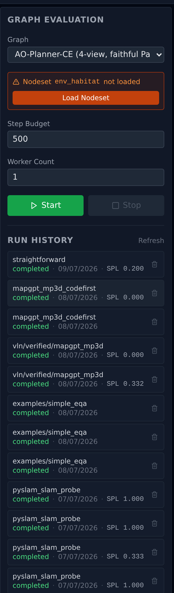

7Batch Evaluation & Job Queue
Submit a graph as an eval run; GPU-budget-gated subprocess execution with per-episode persistence; one queue shared across all Claude / canvas sessions hitting the same backend.
The capabilities so far cover authoring a graph and watching one run go. This one covers the other half of the research loop: scoring a graph at scale — N episodes from a benchmark split, K worker subprocesses for parallelism, GPU budget gating so concurrent sessions don't OOM each other, and per-episode logs you can ship to a teammate without re-running.
Design docs: Batch Eval System · Server Mode (worker-pool fan-out lives here) · ADRs: eval-001 / eval-002 / eval-003 / eval-004
1. Problem
Single-graph canvas Play answers "does my agent move?". Headline numbers — SR, SPL, nDTW on a 100-/500-episode split — require a different runtime shape:
- Reproducibility: each episode starts from a clean simulator state; failures in episode N don't leak into N+1.
- Parallelism: simulators are slow; K worker subprocesses turn a 6-hour serial run into 1 hour at K=6.
- GPU budget gating: 24 GB of VRAM and three Claude sessions all want to launch eval jobs — somebody has to queue, and the wait can't crash the model in a fourth session.
- Lifetime independent of the backend process: a run that takes 4 hours can't die because the user reloaded the canvas. So each run is its own subprocess.
- Per-episode persistence: when episode 47 reports SR=0 you want to read that episode's log without re-running, and without scanning a 50 MB interleaved JSONL.
2. Architecture — Two Layers
The capability is two cleanly-separated layers stacked together:
Layer A — JobScheduler (in backend)
- Singleton owned by
ProcessServices. Per-secondtick()loop. - Admission rule: per measurable resource (VRAM + RAM), calibrated
estimate ≤ measured_free − Σ reservationsAND canvas-lock not held; estimates come from run-fed calibration, with declaredmarginal_vram_mbas the fallback rung. See the JobScheduler design doc. - Cross-session: every
POST /api/eval/v2/startfrom every Claude / browser session hits the same queue (ADR-eval-003). - Spawns each admitted job as a fresh subprocess (
python -m app.eval_subprocess_main --run-dir …). - Refcounts shared singletons; auto-unloads job-loaded ones at refcount-zero (canvas-loaded ones stay).
Layer B — BatchEvalRunner (in subprocess)
- Reads
spec.json+shared_urls.jsonfrom itsrun_dir. - Attaches to parent backend's shared singletons via
register_remote_nodeset— no duplicate VRAM spend. - Iterates the episode list, leases one
WorkerHandleper episode fromEnvWorkerPoolwhenworker_count > 1(ADR-eval-002). - Each episode runs through a fresh
LoopRunner— same dataflow engine as canvas Play. - Per-episode
ExecutionLogger→ self-containedepisodes/ep{NNNN}/on disk. - Touches
_DONEon clean exit; absence + dead PID ⇒aborted.
The split means the backend stays small and stateless about the run (just a queue entry + a PID + a refcount), while the eval subprocess owns the long-lived state. Note the lifetime coupling is deliberate, and one-directional: a backend restart loses the queue and SIGTERMs running subprocesses (the child arms PR_SET_PDEATHSIG at startup — the no-orphan-VRAM guarantee is bought with restart resilience). What survives is the disk: every episode finished before the kill keeps its ep{NNNN}/ directory, and the next status read of a dead PID without _DONE reports aborted.
3. Run-Dir Layout (ADR-eval-004)
Every run gets a directory at outputs/eval_runs/{run_id}/ where run_id is a second-precision timestamp (e.g. 20260518_143052; collisions get _2, _3, … appended). The layout is shared between the backend (writer of inputs) and the subprocess (writer of outputs):
outputs/eval_runs/{run_id}/
├── spec.json ← backend writes pre-spawn: full JobSpec + GraphDefinition.to_dict()
├── shared_urls.json ← backend writes pre-spawn: {nodeset_name: auto_host_url}
├── graph.json ← BatchEvalRunner writes: run-level graph snapshot
├── summary.json ← subprocess writes: running snapshot, per-episode rows, terminal
├── _DONE ← subprocess touches LAST on clean exit (absence ⇒ aborted)
└── episodes/
└── ep{NNNN}/ ← one self-contained subdir per episode
├── log.jsonl — per-node firing log, never interleaves across workers
├── assets/ — image artefacts from this episode
└── episode.json — this episode's row of summary.json (self-describing)
Self-containment is the load-bearing property of ADR-eval-004: copy a single ep{NNNN}/ directory to a teammate and they can replay it standalone. The pre-ADR layout interleaved all workers into one root log.jsonl, which made selective replay essentially impossible at worker_count > 1.
4. JobScheduler — Admission & Lifecycle
4.1 Submit
JobScheduler.submit(spec) validates the spec, allocates a fresh run_id, writes spec.json + shared_urls.json into the run dir, and enqueues a _QueuedJob. It does not spawn — admission is the next tick's responsibility, so even a same-second flood of submits is serialised.
spec shape (assembled by api/execution/eval.py):
{
"eval": { graph_name, selectors, dataset, split,
episode_count, step_budget, start_episode_index,
worker_count, per_step_budget_sec,
episode_indices, episode_selectors },
"scheduling": { marginal_vram_mb, exclusive_gpu, priority },
"graph": GraphDefinition.to_dict(),
"_shared_urls": { nodeset_name: auto_host_url }, # also split out to shared_urls.json
"active_workspace_dir": str | None, # architect-skill overlay
}4.2 Tick — admission rule
One tick() per second from the FastAPI lifespan. For each queued job, in priority order:
- Canvas-lock check: if a canvas Play is running (
ExecutionGuard.current()['mode'] == 'canvas'), no new jobs admit. Set viaset_canvas_lock_callback. Canvas always wins — preempts even high-priority queued jobs. - Budget check: per measurable resource, calibrated
estimate ≤ measured_free − Σ reservations(measured admission, 2026-07).marginal_vram_mbis now the declared fallback when calibration is incomplete; already-loaded shared singletons count ~0 in the estimate. - Exclusive-GPU jobs: if a queued job has
exclusive_gpu=True, it admits only when no other jobs are running. Used by SLAM / VoxPoser-class graphs that don't share GPU memory cleanly. - If admitted, spawn the subprocess in its own session (
start_new_session=True); the child self-armsPR_SET_PDEATHSIGat startup (eval_subprocess_main.py · _set_pdeathsig) so the kernel reaps it if the backend dies (no orphan VRAM squatting).
Admission has teeth beyond the gate: the scheduler exports the admitted charge as AGENTCANVAS_VRAM_CAP_MB, and the subprocess caps its torch allocator at that figure (eval_subprocess_main.py · _apply_vram_cap) — a run that blows past its estimate OOMs itself instead of its neighbors. Best-effort by design: EGL contexts and child auto_host servers have their own allocators; the measured gate stays the primary defense.
4.3 Cancel + auto-unload
POST /api/eval/v2/runs/{run_id}/cancel from any session terminates the subprocess via SIGTERM → SIGKILL. summary.json stays whatever the subprocess wrote last; absence of _DONE + dead PID is detected by the next status read as aborted.
The scheduler refcounts shared nodesets per consuming job. When a run terminates (clean, aborted, cancelled), each shared nodeset it consumed loses one refcount. Nodesets the scheduler itself loaded for that job (tracked in _shared_loaded_by_jobs) get auto-unloaded at refcount-zero on the next tick. Singletons loaded via canvas Play do not get touched by this path — refcount drops to zero but the entry is not in the auto-unload set.
5. Worker Pool & Batched Inference
These belong topologically to Capability 3 — Isolated Runtime Environments (they're the same subprocess + HTTP plumbing scaled up). The eval-side view is short:
worker_count = N⇒EnvWorkerPoolspawns N tagged copies of every env nodeset (parallelism="replicated") and registersRemoteEnvPanelProxy+ tagged URL for each. Non-env nodesets stay singleton.- Each episode leases one
WorkerHandlecarryingenv_panel_overrides+server_url_overrides. The leasedLoopRunnerconsults those before the global registry — soset_episode/playand in-graph tool calls route to that worker's subprocess. - For pure-functional nodesets (
parallelism="shared", e.g. VLM forward) one subprocess hosts aBatchedInferenceServer. K parallel callers'forward()submissions coalesce into one stacked forward pass; K result slices scatter back. Opt-in viabatched: ClassVar[bool] = True+batch_dim: ClassVar[str] = "<input_port>"on the node class (ADR-server-003). worker_count = 1is bit-identical to single-worker — empty overrides, no tagged proxies, single shared subprocess for everything.
6. Per-Episode Logs
Each episode runs through a fresh ExecutionLogger that writes to its own episodes/ep{NNNN}/log.jsonl. ExecutionPrinciples.suppress_nav_events = True in batch mode — the WS exec_log event is silenced (it'd be useless: 100 episodes × 14 nodes × 500 steps × 5 sessions would saturate any UI) — but on-disk capture is unchanged.
For the consumer side (replay UI, summary dashboards), summary.json holds one row per episode with {episode_index, episode_id, scene_id, instruction, metrics, step_count, elapsed_sec, status, error, worker_id}. Each episode's episode.json is the same row, written by the subprocess on episode finish so partial summaries are readable even if the run is mid-flight.
7. The Eval Page (GUI)
Everything above also drives from the Evaluate tab. Left column: the submit form — a graph picker whose selection runs POST /introspect to resolve the graph's env nodeset and its selector fields (if that nodeset isn't loaded on this backend, the panel gates on a Load Nodeset button — EnvInfoPanel.tsx), step budget, worker count, Start/Stop; below it, Run History — one row per past run with graph name, status, date, and headline SPL (RunHistory.tsx, re-polled every 3 s while a run is active). Right column: the selected run — status and elapsed time, episode progress bar, per-worker episode chips, aggregate metric cards, a per-episode table with worker attribution, scene, and metrics (EpisodesTable.tsx), and an Export JSON button. Selecting a historical run loads its persisted summary and episode rows via GET /runs/{run_id}; the same run dirs feed the Logs and Replay pages.
![The Evaluate tab: left column with the graph picker set to AO-Planner-CE, a Load Nodeset gate for env_habitat, step budget 500, worker count, Start and Stop buttons, and a run history list; right column showing a completed run — 100 of 100 episodes at 100 percent, per-worker chips W0 through W9 with 10 episodes each, aggregate metric cards for SPL 0.205, success 0.350, nDTW 0.405, path length, distance to goal and oracle success, and a per-episode table with worker, episode id, scene, SPL, SR, nDTW and status columns](img/batch-eval-page.png)
aoplanner_ce on R2R-CE rand100 — 100/100 episodes in 59 minutes across 10 workers (the W0–W9 chips carry 10 episodes each), aggregate SR 0.350 / SPL 0.205 / nDTW 0.405, and per-episode rows with worker attribution.
env_habitat isn't loaded on this backend), and Run History carries each run's headline SPL.8. HTTP API
All routes mounted under /api/eval/v2/ by api/execution/eval.py:
| Method + Path | Purpose |
|---|---|
POST /api/eval/v2/start | Submit a job spec. Returns run_id. Enqueues; does not spawn. |
GET /api/eval/v2/status | Status of the most recently started run in this session. |
GET /api/eval/v2/episodes | Episode-level snapshot of the current run. |
POST /api/eval/v2/stop | Legacy in-process stop (pre-ADR-eval-003 path). |
POST /api/eval/v2/runs/{run_id}/cancel | Terminate the subprocess of any run by id, across sessions. |
GET /api/eval/v2/queue | Full cross-session queue + running jobs. The Eval page's "Queue" tab. |
GET /api/eval/v2/runs | List past run summaries. |
GET /api/eval/v2/runs/{run_id} | Full summary + per-episode rows for one run. |
DELETE /api/eval/v2/runs/{run_id} | Delete a past run's directory (only when not running). |
POST /api/eval/v2/introspect | Resolve EvalConfig against a graph — returns split list, episode count, env_nodeset, etc. Used by the Eval page to populate dropdowns. |
GET /api/eval/v2/estimate | Advisory resource estimate for a run (VRAM + RAM, per resource) from the calibration store — read-only, loads nothing. estimate_mb is null until every component the graph needs has calibration data; max_workers is the largest worker count that fits measured free. |
GET /api/eval/v2/export/{run_id} | Download a run as a tarball for teammate sharing. |
9. The /experiment:run Wrapper
Application code shouldn't talk to the eval API directly when running from a Claude session — go through the /experiment:run <profile> -- <cmd> skill (.claude/experiment/). It:
- Reads
marginal_vram_mb/exclusive_gpufrom.claude/experiment/profiles.yaml(per-profile, defaults: full GPU + exclusive). - Allocates a backend port from the 8765–8769 pool, brings up a dedicated
auto_hostif needed, exportsBACKEND_URL=http://127.0.0.1:<port>in the child env. - The wrapped command reads
$BACKEND_URLand submits via the API above. Never hardcode:8000— that's the user's interactive backend. - On exit the wrapper releases the admit entry; backend lifetime is owned by
/experiment:teardown(no blanketpkill).
See .claude/experiment/README.md for invariants. Bare python tools/eval_*.py / uvicorn / auto_host bypass admission and risk OOM or port collision under concurrent sessions.
10. Key Files
| File | Role |
|---|---|
agentcanvas/backend/app/services/job_scheduler.py |
JobScheduler singleton — submit / queue / tick / cancel / shared-nodeset refcount + auto-unload (ADR-eval-003) |
agentcanvas/backend/app/services/run_state_io.py |
File protocol shared between scheduler (parent) and runner (subprocess) — write_spec / write_shared_urls / read_summary, atomic write helpers, full run-dir schema doc at top of file |
agentcanvas/backend/app/eval_subprocess_main.py |
Subprocess entry — python -m app.eval_subprocess_main --run-dir …; reads spec.json + shared_urls.json, attaches to parent's shared singletons, invokes BatchEvalRunner.execute(), touches _DONE |
agentcanvas/backend/app/agent_loop/eval_batch.py |
EvalConfig, EvalRun, BatchEvalRunner (imports ExecutionPrinciples from loop_runner.py, where it is defined); per-episode LoopRunner creation, _run_one_episode driving step-budget + per-episode timeout |
agentcanvas/backend/app/agent_loop/env_worker_pool.py |
EnvWorkerPool, WorkerHandle — N-handle lease/release (ADR-eval-002) |
agentcanvas/backend/app/api/execution/eval.py |
/api/eval/v2/* endpoints (start / stop / status / runs / queue / cancel / introspect / export). Assembles spec dict, calls JobScheduler.submit |
agentcanvas/backend/app/api/execution/eval_storage.py |
Past-run JSON read/write helpers — backs GET /runs, GET /runs/{id}, DELETE /runs/{id} |
agentcanvas/backend/app/services/test_job_scheduler.py |
JobScheduler tests — admission rule, canvas-lock preemption, refcount auto-unload, cancel path |
agentcanvas/backend/app/services/test_run_state_io.py |
Atomic-write + concurrent-read tests for spec.json / shared_urls.json / summary.json |
.claude/experiment/profiles.yaml |
Per-profile marginal_vram_mb / exclusive_gpu declarations; unknown names fall back to full-GPU + exclusive_gpu |
Status
| Item | Status | Notes |
|---|---|---|
Graph-driven eval (BatchEvalRunner over LoopRunner) | Done | ADR-eval-001 |
Worker-pool fan-out (EnvWorkerPool, tagged proxies, worker_count > 1) | Done | ADR-eval-002 PB |
Batched inference tier (BatchedInferenceServer, batched/batch_dim) | Done | ADR-eval-002 PC; pure-functional contract enforced by register_node |
| Subprocess-per-run scheduler (cross-session admission) | Done | ADR-eval-003; tick=1s, FIFO+priority |
Per-episode log layout (self-contained ep{NNNN}/) | Done | ADR-eval-004 |
| Canvas-lock preemption | Done | ExecutionGuard.canvas mode blocks new admissions |
| Shared-singleton refcount + auto-unload | Done | Job-loaded singletons released at refcount-zero; canvas-loaded stay |
PR_SET_PDEATHSIG on subprocess | Done | Kernel-reaps eval children when backend dies — no orphan VRAM |
Cross-session cancel (POST /runs/{id}/cancel) | Done | Any session can cancel any run by id |
Active-workspace overlay (ACTIVE_WORKSPACE_DIR in subprocess) | Done | ADR-components-009; used by architect skills |
Run export tarball (GET /export/{run_id}) | Done | Single download for teammate sharing |
| Backend-restart behaviour | By design | Restart loses the queue and SIGTERMs running subprocesses (PR_SET_PDEATHSIG — the no-orphan trade-off, §2); finished episodes stay readable on disk, dead PID without _DONE reads as aborted |
VRAM cap backstop (AGENTCANVAS_VRAM_CAP_MB) | Done | Subprocess torch allocator capped at the admitted charge — over-estimate runs OOM themselves, not neighbors (§4.2) |
| TODO #60 — overlay-aware shared spawn | Partial | Eval submits with active_workspace_dir touching shared nodesets currently fall back to frozen URLs; ephemeral spawn path stubbed in JobScheduler.set_workspace_component_registry. |